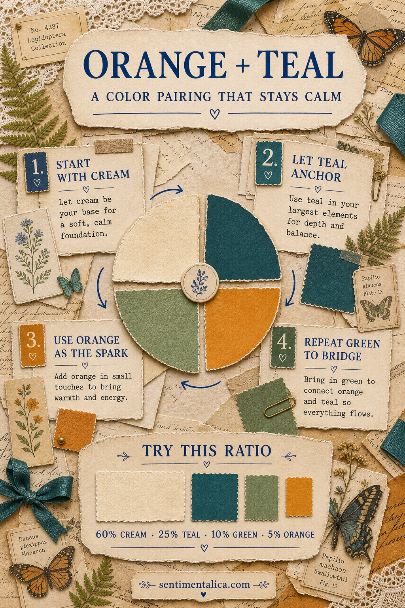
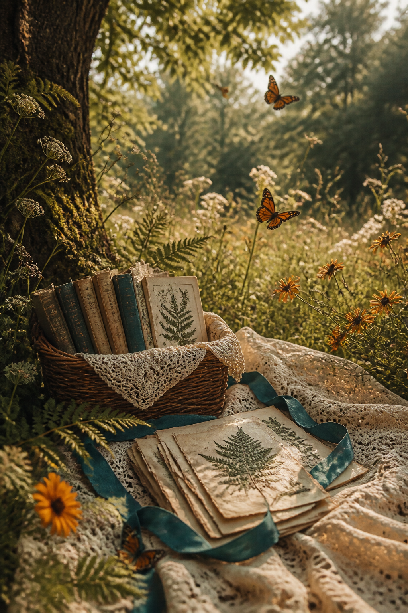
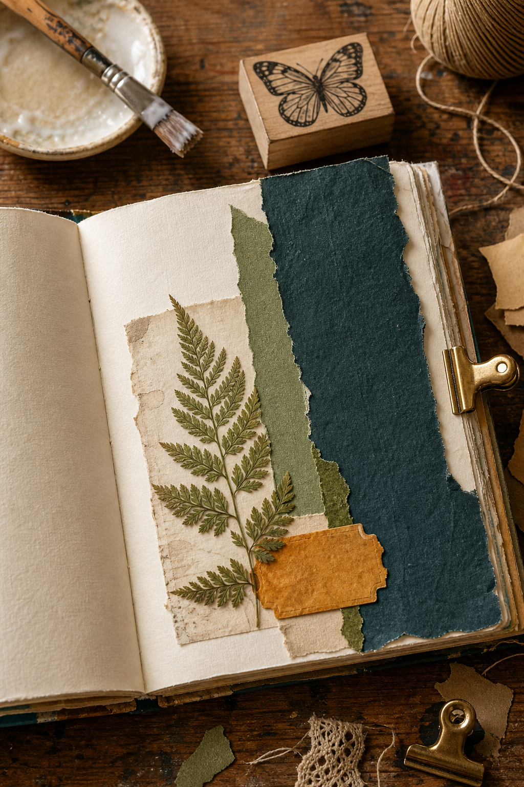
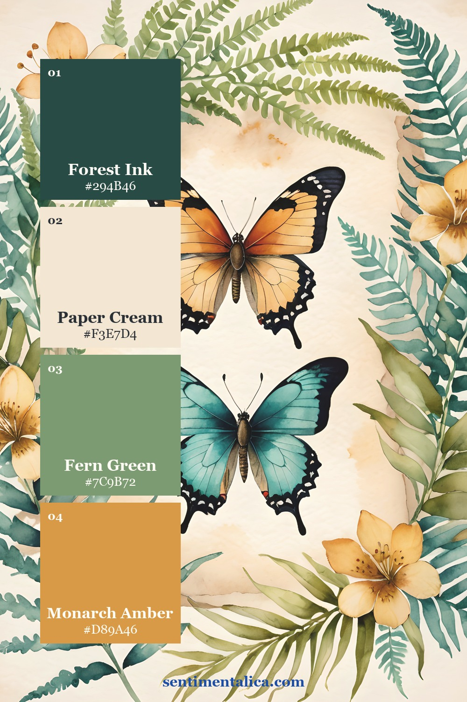
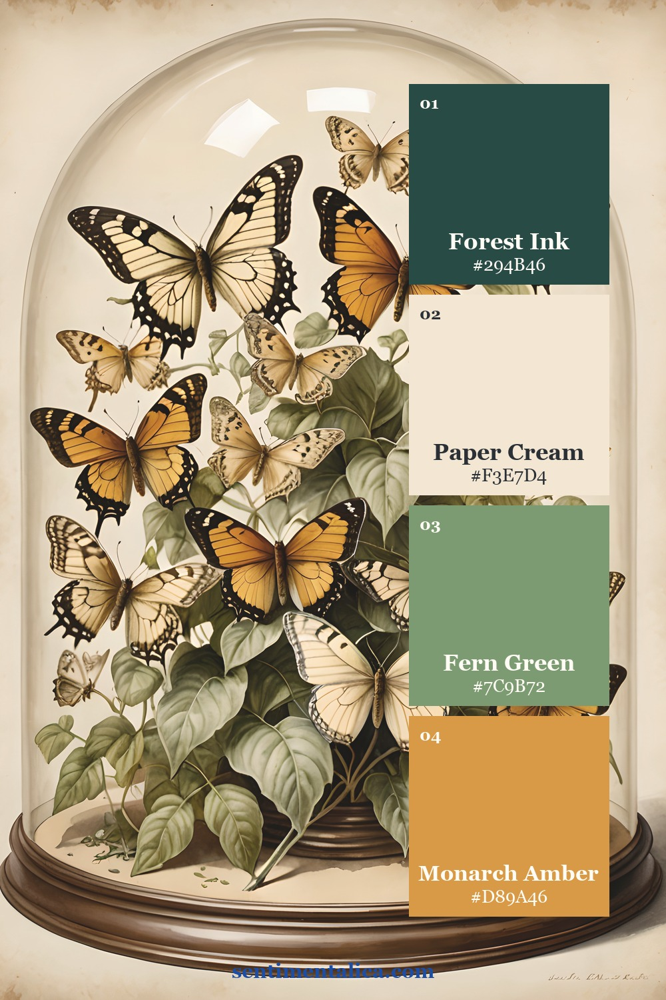
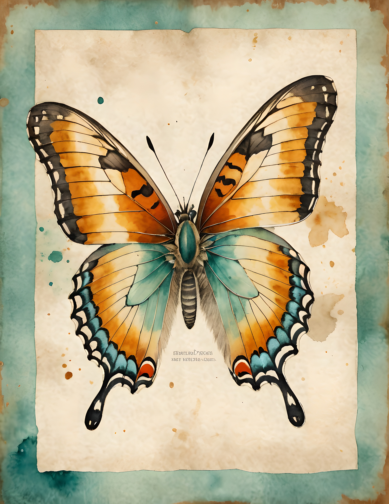
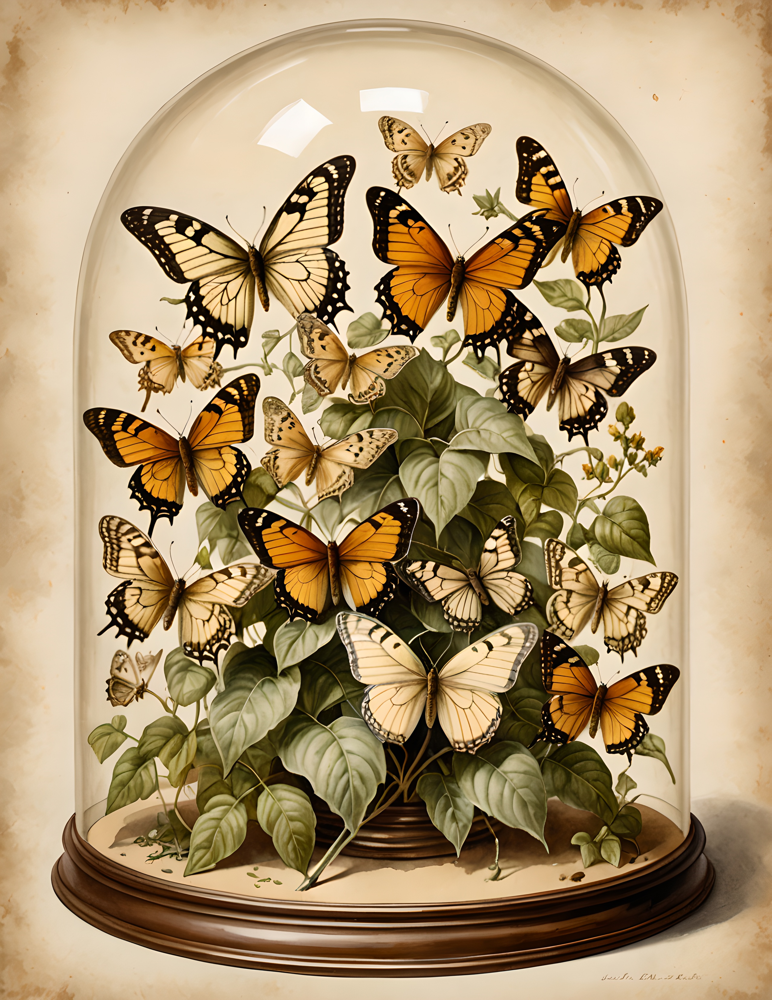

Orange and teal can make a butterfly journal page feel alive, but they can also begin arguing with each other. The answer is not to remove either color. Give them different jobs, place quiet paper between them, and let one appear much less often than the other.

Soften the complementary pair
Orange and teal sit close to a complementary relationship, so the contrast is naturally energetic. For a vintage page, soften both ends. Choose deep teal instead of bright turquoise and monarch amber instead of pure orange. The colors still wake each other up, but they no longer look modern or plastic.
Use paper cream as the pause between them. A cream border, torn book page, label, or blank writing area prevents the colors from touching everywhere. That little separation is often the difference between lively and loud.
Give every color one job
- Paper cream carries the background and open writing space.
- Deep teal anchors one large layer or page edge.
- Fern green connects botanical details to the teal.
- Monarch amber appears in one butterfly, ticket, thread, or tiny torn scrap.

A useful starting ratio is 60 percent cream, 25 percent teal, 10 percent green, and 5 percent orange. You do not need to measure the page. Simply check that cream is clearly the largest area and orange is clearly the smallest.
Check the palette without color
Take a quick phone photo and switch it to black and white. The cream should remain the lightest area, the teal should form a clear dark anchor, and the butterfly should sit between them. If the orange detail disappears completely, place it beside cream. If it becomes the darkest object, soften it with a faded print, translucent paper, or a little distance from the teal.
This value check is especially useful before gluing. It shows whether the composition works as a page, not only as a collection of pretty colors.
Repeat color instead of adding more
If the page feels unfinished, repeat one of the four colors before reaching for a fifth. A second small teal scrap can balance a teal page edge. A fern clipping can echo a green leaf. Repetition makes the palette look deliberate, while another color usually makes the page harder to read.

Build the page from largest to smallest: cream base, teal anchor, green bridge, amber spark. Leave the amber piece loose until the end. Moving that tiny accent around is easier than rebuilding the whole composition.
Two palettes from real butterfly pages
The same four colors can feel botanical or cabinet-of-curiosities depending on the source image. In the first palette, fern leaves keep the butterflies airy. In the second, darker glass and foliage make the same amber feel more antique.


If you want a softer floral bridge, choose one pale flower from the 100 free floral pictures. Keep it cream or muted green so it supports the palette instead of becoming a fifth focal color.
See the palette in real pages


Gilded Wing is a commercial-use watercolor image pack built around butterfly studies, botanical details, and naturalist color. Use the pages as source imagery, then apply the ratio above when you add your own papers and keepsakes.
A strong complementary palette does not need equal amounts of both colors. Let teal create the room, let cream create the quiet, and let orange arrive as one beautiful surprise. Find more practical palette guides in the Sentimentalica journal.